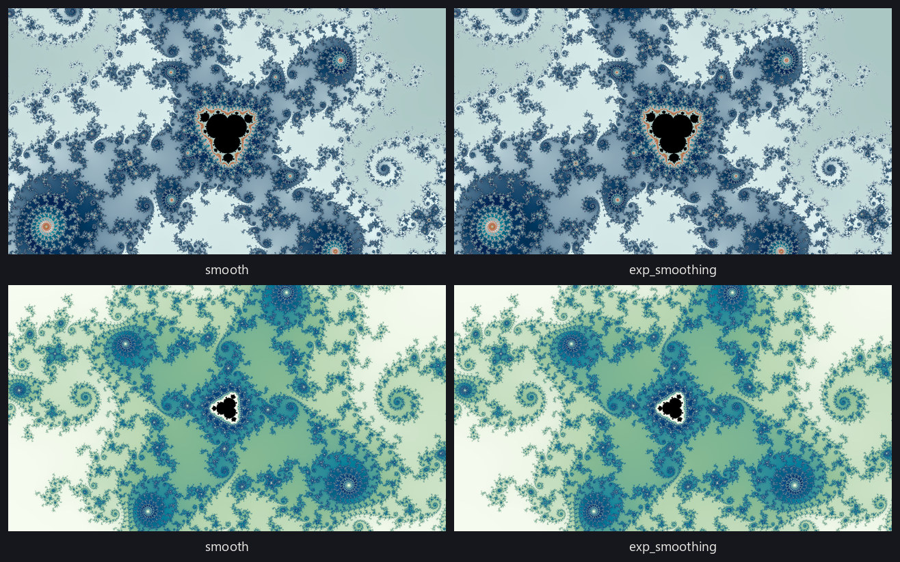

Rendering fundamentals built one way of rendering a location: compute the smooth field, level it, map a palette across it. This page describes several other ways to render a fractal, each reaching for a different artistic effect. It is hardly exhaustive: dedicated fractal-art programs like Ultra Fractal carry far more options than what is shown here. A rendering mode is any recipe for turning a location's orbits into a picture — and because an orbit is a whole path through the complex plane, dozens or thousands of positions of which the escape time keeps just one number, there are many recipes to choose from, each with its own artistic character. Most modes work exactly like smooth does: reduce each orbit to a value, collect the values into a field, and hand the field to the same leveling and palette machinery as before. But not all of them — some modes blend two renderings into one, some shift the palette by where the orbit went, and some families skip fields entirely and paint the orbit's behavior directly. This page runs through them in roughly that order of strangeness.
Not every recipe I tried earns a place in the pipeline. The renderer supports more modes than this page shows; I hand-picked the subset the program draws from when it generates wallpapers and their approximate parameter ranges. Several of the ones left out are mathematically interesting and still almost never produce a picture worth keeping without careful tuning by hand.
Fields from the orbit's path
Four modes keep smooth's recipe — one number per orbit, one continuous field — but measure the path instead of the clock.
Triangle-inequality average (tia) checks, at every step, where the orbit actually landed inside the range it could possibly have landed in. Before the step, the triangle inequality brackets the next distance from the origin between a lowest and highest possible value; the mode scores the real landing as a fraction between those bounds, and averages the fractions over the orbit. Because the score can swing fully between one step and the next, the field bands far more finely than escape time — the result reads as engraving where smooth reads as contour lines.
Stripe coloring works from the angles of the orbit's points. Each orbit point is a complex number and so has an angle; the mode averages a wave over those angles — one-half plus one-half the sine of six times the angle, six being the stripe count the pipeline draws with — and the wave's crests show up as flowing bands laid along the fractal's structure.
Curvature coloring measures how sharply the path turns: at each step, the unsigned angle between the new step and the one before it, averaged along the orbit. Orbits that march outward turn gently; orbits that spiral and fold turn hard on every step, and the two kinds of motion separate cleanly in the image.
Exponential smoothing sums — not averages — a quantity that is near one while the orbit is still small and dies off as it grows, so the field mostly records how long the orbit lingered near the origin before making its escape. Slow, wandering orbits accumulate a large total; orbits that bolt immediately barely register.



Orbit traps
An orbit trap places a fixed shape in the complex plane and asks each orbit how close it ever came to the shape. In this engine every trap is centered on the origin, and no trap is a mode of its own on this page; traps appear in two roles — as a texture laid over a smooth rendering in the composites below, and painted directly in the last family on the page. Two shapes carry that work. The cross trap is the distance to the two coordinate axes. The Gaussian-integer trap traps against the grid of points with whole-number real and imaginary parts: there is one trap cell repeating across the entire plane rather than one shape at the center, so the stamped echoes tile instead of radiating — a texture with the granularity of graph paper crumpled along the fractal's folds. And unlike every field mode above, a trap is defined for interior points too, which is what fills the normally-black lake with structure where a trap's own reading is used as a texture.
Blending modes together
A composite is also a rendering mode. The engine can render the same location twice — a base and a texture — normalize each, and blend them with any of the standard picture-blending operators (multiply, screen, additive, and their relatives). Four of the modes the pipeline draws are built exactly this way, all on a smooth base with the blend set to screen at 85% strength: smooth_stripe and smooth_curvature lay their namesake fields over the smooth rendering, and smooth_mean_angle and smooth_angle_min lay over two angular readings of the Gaussian-integer trap — the direction the trap is encountered from, averaged out, and the direction at the moment of closest approach. The 85% is a taste constant with a reason: at full strength the texture's own normalization competes with the base's and the escape structure stops being legible underneath.


The threads mode is the family's extremist. Its texture accumulates the cross trap over the whole orbit — every pass near the axes contributes, weighted by how close it came, so a pixel whose orbit grazed the axes a dozen times reads differently from one that grazed once — and the result is laid additively over the smooth base: sparse bright filaments tracing the orbit's near-misses, stacked on top of the classic rendering rather than mixed into it. Additive blending is why the filaments glow. It is also expensive to draw: the trap distance is evaluated at every iteration of every orbit, with no early exit.

The itinerary mode
The itinerary mode comes from a classical idea in the study of dynamics: instead of asking when an orbit escapes, ask where it goes on the way. Cut the plane into four equal angular sectors around the origin, follow the orbit, and write down the sequence of sectors it visits. That sequence is the orbit's itinerary — its route, recorded coarsely — and the mode turns it into a number by reading the sector indices as digits after the point in base four, so the first few moves dominate the value and each later move refines it. The engine keeps 26 digits, which is exactly as many as double-precision arithmetic can hold before the deepest digits turn to rounding noise — and rounding noise in an address doesn't blur the image, it bands it, so the depth is a hard ceiling rather than a taste choice.
The result carves the image into territories of shared history: within a patch every orbit opened with the same route, and the borders between patches are precisely where the dynamics start to disagree — so the borders are sharp, and the image reads as stained glass where smooth reads as airbrush. Rather than forming a field of its own, the itinerary shifts the palette: the smooth rendering is drawn underneath — its palette position taken from each pixel's rank in the frame rather than from the leveled value — and each pixel's address rotates that position by up to half a turn, so route-territories appear as coordinated recolorings of the classic structure.
One detail matters on Julia-set-style images, where each pixel is a different starting point. There the orbit's first entry is the starting point itself — a value the iteration hasn't produced — so its sector records only which quadrant the pixel sits in, and the image inherits a hard wedge seam along the sector boundaries, drawn over the fractal rather than by it. The engine therefore starts reading the itinerary one step in, at the first iterated point; the leading digit's boundaries then fall along the preimages of the sector cuts, which are the set's own curves. On parameter-plane images every orbit starts from the same point and the question never arises.

Direct traps
The last family never makes a field at all. A direct trap watches each orbit as it iterates, and every time an iterate falls within a threshold of the trap shape, it takes a sample from the palette and paints it into the pixel then and there — closer approaches sample deeper into the gradient and land with more weight, which is why the strokes come out soft-edged with nothing extra to tune. A pixel's final color is the stack of every near-miss its orbit ever made, in order.
Three modes ship this way, built from two shapes: the cross of the coordinate axes — twice, once brightening a black ground and once darkening a white one, which produce entirely different pictures from the same geometry — and the real axis alone, the family's one directional member. Because nothing is normalized per frame, direct traps are the only modes that don't adapt to the location they're pointed at: where near-misses are sparse they are spectacular, and where near-misses are everywhere they wash out. They are drawn like every other mode and simply live or die by the judge.


One judge, two kinds
Later in the pipeline, a trained judge scores finished renders (training judges), and one judge covers this whole roster. What splits in two is not the judge but what it is rating: the plain smooth rendering is one kind, and everything else — every field, composite, and trap variation on this page — is the other. The two kinds are rated separately, out of pools kept apart, because the two questions turn out to be different: what makes a classic smooth render beautiful is not what makes an engraved, striped, or thread-laced render beautiful. The scale the two share is nominal only — the same score can mean a keeper in one kind and an also-ran in the other, and neither reading is wrong. Downstream, every mode is held to its own bar.
The modes the pipeline draws
One structural fact shapes everything: the search for good locations (finding good locations) renders only smooth. Every other mode enters later, in finding good wallpapers, when the pipeline takes a discovered location and tries renderings of it — one attempt in smooth and two in other modes, drawn without replacement from the rest of the roster.
The scoreboard so far, over every run and gallery pass to date — 641 wallpapers kept out of 1,361 attempts in these modes:
| mode | kept | of candidates tried |
|---|---|---|
| smooth | 314 | 708 |
| exp_smoothing | 95 | 115 |
| threads | 42 | 54 |
| itinerary | 42 | 58 |
| stripe | 40 | 69 |
| tia | 34 | 61 |
| smooth_stripe | 33 | 56 |
| smooth_angle_min | 9 | 37 |
| direct_trap_multiply | 8 | 30 |
| smooth_curvature | 8 | 31 |
| direct_trap_screen | 7 | 41 |
| direct_trap_lines | 5 | 29 |
| smooth_mean_angle | 4 | 38 |
| curvature | 0 | 34 |
Smooth accounts for about half of everything kept — the classic rendering earns its place as the default — while the rest spread across the roster, a few of them at rates that rival it. The counts at the bottom are drawn from samples too small to write any mode off, and a mode that keeps little in these attempts may still be the one that makes a particular location work; that is the reason to keep drawing it.

Beyond this catalog
What this page describes is one project's roster. The wider fractal-art world has accumulated many more ways to render these objects, and a few come up often enough to deserve a name and a pointer:
Distance estimation tracks, alongside each orbit, how sensitively its endpoint responds to nudging the pixel, and converts that into an estimate of the pixel's distance to the set's boundary — rendered directly, the boundary becomes crisp filaments of uniform width at any zoom, like a technical drawing of the fractal. Normal-map lighting treats a field as terrain: read its slope, convert the slope to a surface direction, and light the fractal as relief carved in material — the same normal mapping trick games use to shade detailed surfaces cheaply. The Buddhabrot abandons per-pixel coloring entirely: it follows the full orbits of millions of escaping points and brightens every pixel each orbit passes through, building a glowing density image of where the dynamics actually travel — something like an X-ray of the Mandelbrot set. Histogram coloring re-spreads the palette by rank rather than by raw value, so every color gets used in proportion to how much of the image wants it — a cousin of the leveling step from rendering fundamentals, solving the same problem a different way. Fractal flames leave escape-time fractals altogether: they iterate a system of nonlinear functions and accumulate the wandering point's path into a log-scaled density image, colored by which functions the path took — a different mathematical object with its own dedicated tools. And programs like Ultra Fractal treat all of this as an open library: thousands of user-written coloring algorithms, freely combined with any fractal formula, stacked in Photoshop-style layers — a reminder that a rendering mode is just a program, and there is no end of programs to write.
One discovery, many wallpapers
The reason to keep a roster of modes at all is arithmetic. Finding a genuinely good location is the expensive, uncertain part of the pipeline — but once found, a location is not one image. It is a smooth render, a tia render, a threads render, each in any palette: one discovery, many possible wallpapers, and the modes multiply what every discovery is worth. How those discoveries get made is the next page: finding good locations covers the search, training judges covers teaching machines to recognize — mode by mode — when the render that came back is worth keeping, and finding good wallpapers is where a found location is finally drawn every way on this page.